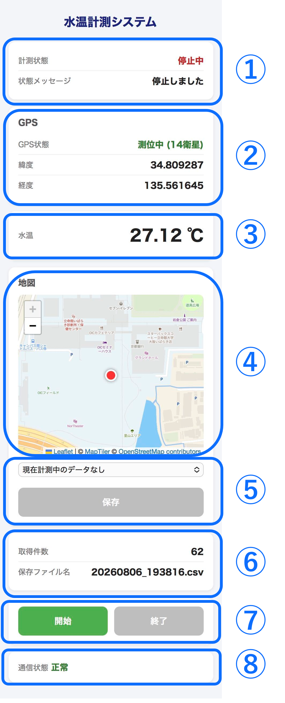
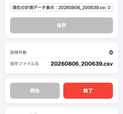
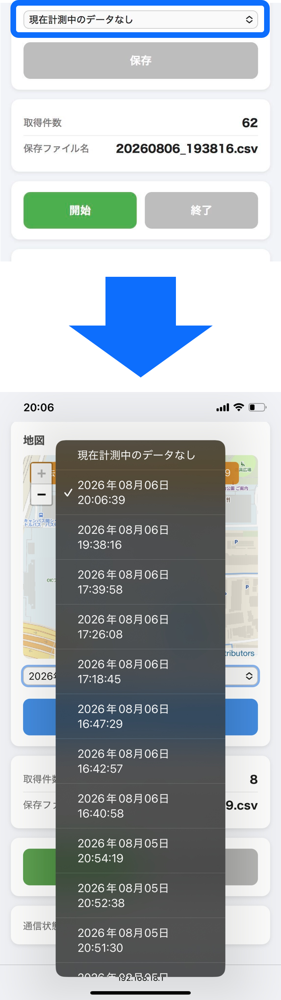
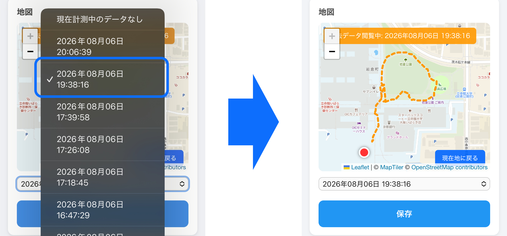
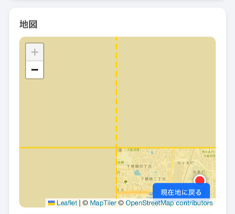

Web画面概要
スマートフォンのブラウザからアクセスすると、 現在の水温・GPS情報を確認できます。 また、計測開始・停止や保存したデータの取得を行うことができます。

表示項目
Web画面には以下の情報が表示されます。
| 項目 | 説明 |
|---|---|
| ①計測状態 | 現在の計測状態を表示します。 |
| ②GPS情報 | GPS測位状態、GPSから取得した現在位置(緯度･経度)を表示します。 |
| ③水温 | 水温計(DS18B20)から取得した水温を表示します。 |
| ④地図 | 現在地を赤丸、現在記録中のデータの軌跡を青色で表示します。⑤によりファイルが選択された際には選択されたファイルに保存されたデータの軌跡を黄色で表示します。 |
| ⑤ファイル選択･保存欄 | 保存したいファイルを選択し、「保存」ボタンを押すことでCSVファイルを保存できます。 「現在計測中のデータ」を選択すると、過去の計測データの選択が解除されます。 |
| ⑥記録状態 | 記録中のファイル情報を示します。 取得件数は現在保存されている計測データ数を示します。 保存ファイル名は現在記録中のCSVファイル名を示します。 |
| ⑦記録の開始･停止ボタン | データ記録の開始と停止を行います。 「開始」ボタンを押すと記録が開始され、「停止」ボタンを押すと記録が停止されます。 |
| ⑧通信状態 | スマートフォンとキットとの通信状態を示します。 |
計測開始
GPS取得状態を確認後、 「計測開始」ボタンを押してください。
開始すると、以下のデータを1秒ごとに保存します。
- 計測時刻
- 水温
- 緯度
- 経度
- GPS測位状態

計測停止
計測を終了するときは、 「計測停止」ボタンを押してください。
停止後、それまで取得したデータがCSVファイルとして保存されます。

保存データの選択
保存された計測データ一覧から、 確認したいファイルを選択します。

移動軌跡の確認
CSVファイルを選択すると、 取得した位置情報をもとに移動軌跡が地図上に表示されます。

地図表示に関する注意
図6に示す黄色の領域は、原則として地図の想定範囲外を示しています。 地図は想定した計測範囲内で使用することを前提としており、琵琶湖のほとんどの範囲を表示できますが、南端など一部表示範囲外となる場所があります。 表示範囲外へ移動すると、地図が正しく表示されない場合があります。また、表示範囲外への移動を防ぐために表示範囲を制限しているため、まれにこの制限の影響で地図を操作できなくなる場合があります。

このような表示になった場合は、地図画面右下の「現在地に戻る」ボタンを押してください。 改善しない場合は、Webページを再読み込み（リロード）してください。 ただし、想定範囲外への移動が原因である場合は、これらの操作では改善しません。地図データ自体を変更する必要があるため、利用者による対応はできず、エンジニアによるプログラムの修正および再配布が必要となります。 なお、地図の想定範囲外へ移動した場合でも、水温や緯度・経度などの計測データは正常に記録されます。
CSVファイルの保存
保存したい計測データを選択し、 「保存」ボタンを押すことでCSVファイルを取得できます。
スマートフォンとキットのWi-Fi接続が一時的に切断された場合でも、計測データはキット内に保存され続けます。 Wi-Fi接続を再開した後、保存されたCSVファイルをダウンロードできます。

CSVデータの詳細については 「CSVデータ」のページを確認してください。
CSVデータについて →